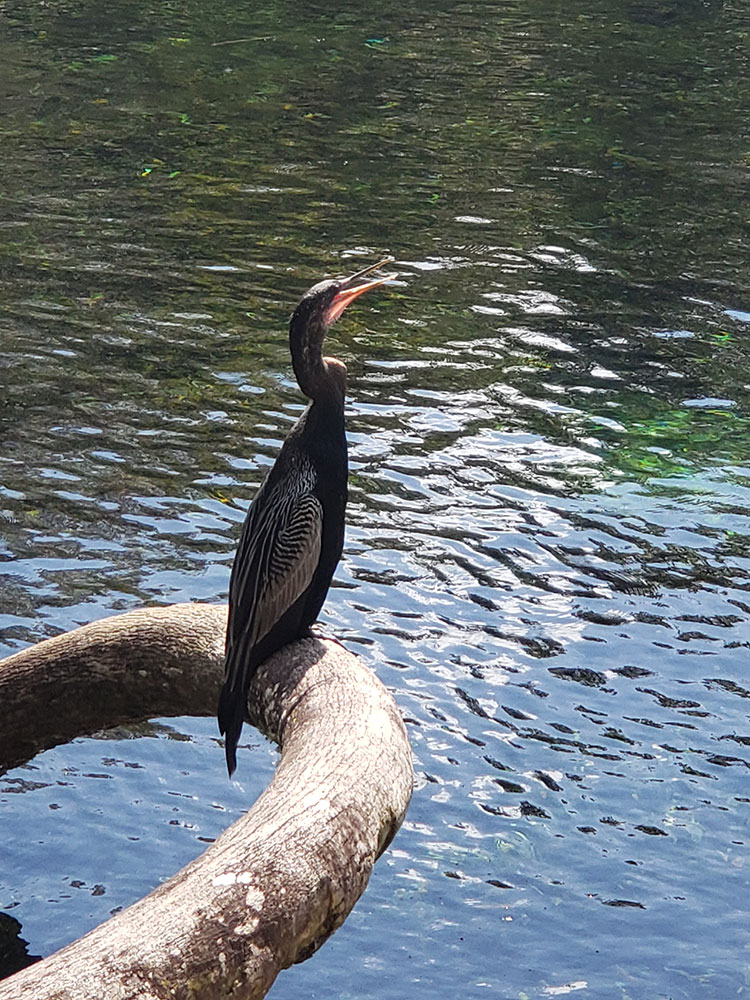
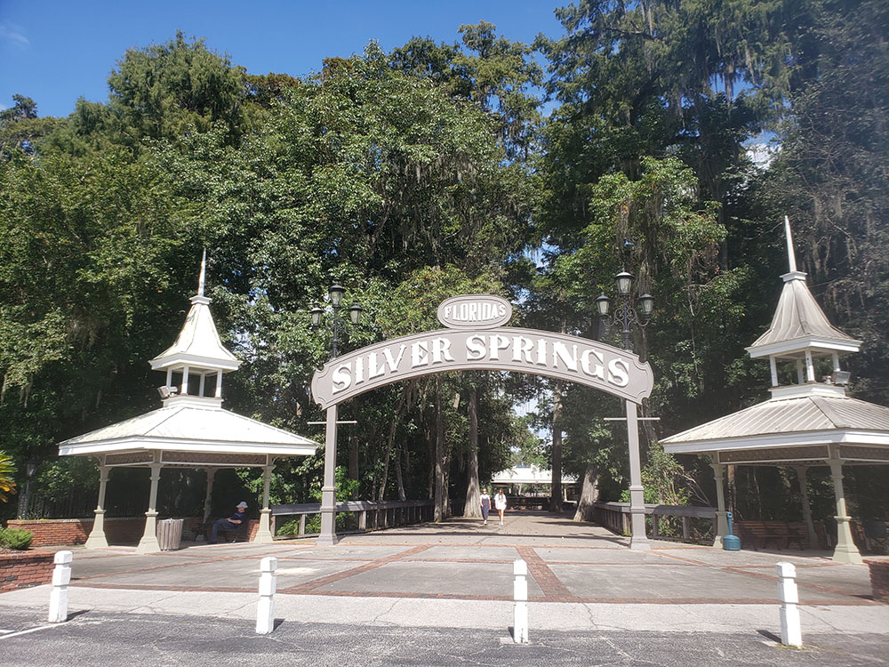
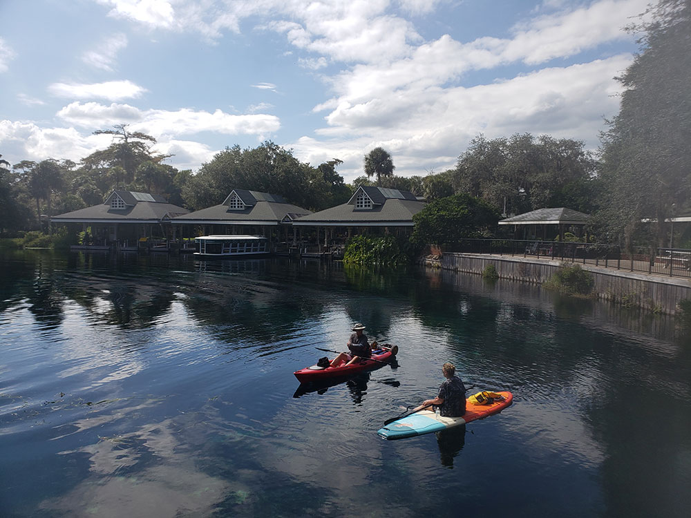
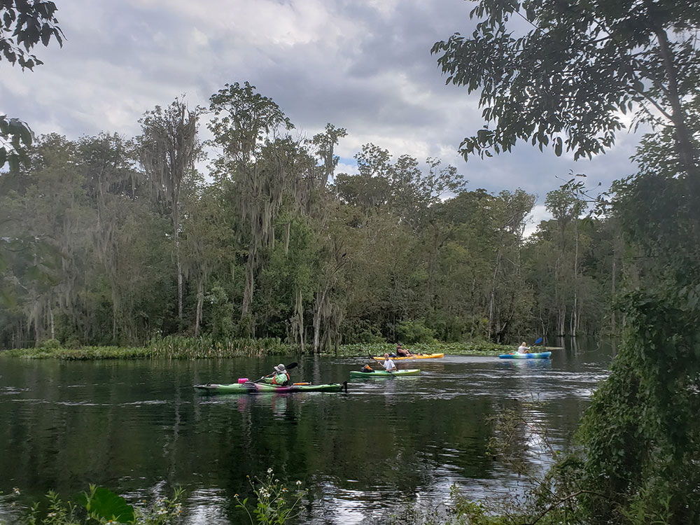
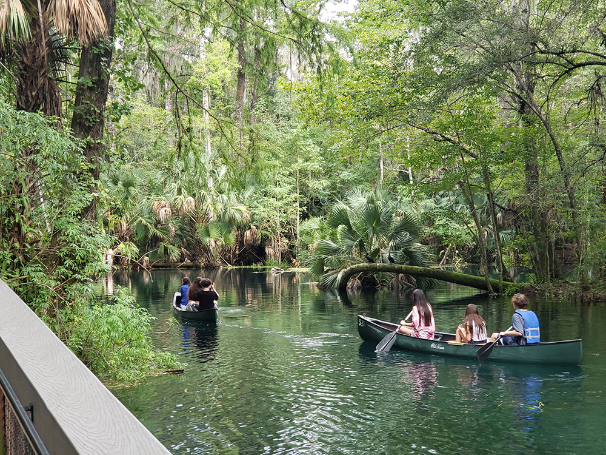
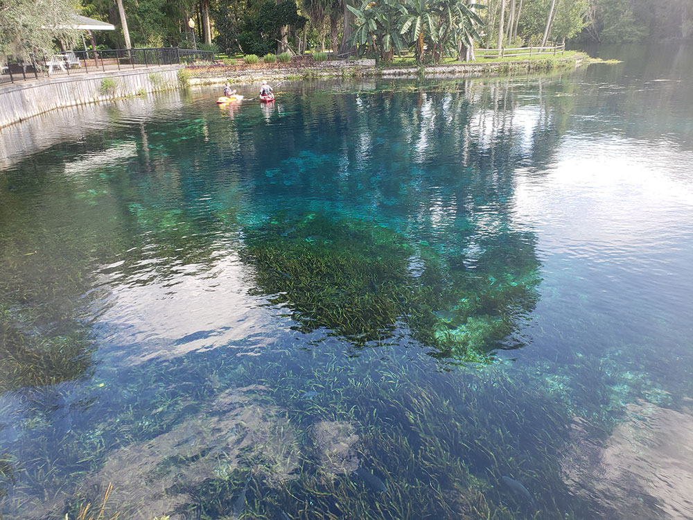

Largest artesian spring in the world and the site of the oldest commercial tourist attraction in Florida
General Information
Park open daily 8am to sundown
Glass Bottom Boat Tours:
30-Minute Tours: 10am to 5pm
Extended Tours: Fridays, Saturdays & Sundays, departures at 11 am, 1 pm and 3 pm
Canoe, Kayak and SUP Rentals:
Launch Ramp Hours, 8 am to 5 pm
Last Departure Downriver to Ray Wayside Park, 1 pm
Last Pickup at Ray Wayside Park, 5 pm
Last 2-hour rental, 3:00 pm
Last 1 hour rental, 4:00 pm
Children 6 and under: Free
Glass Bottom Boat 30 Minute Tour: Adults: $12.00 Seniors 55 and over: $11.00 Children 6-12: $11.00 Children 5 and under: Free
Glass Bottom Boat Extended Tours Fridays, Saturdays & Sundays: Adults: $25.00 Seniors 55 and over: $20.00 Children 6-12: $20.00 Children 5 and under: Free
How to Get There
From Orlando (84 miles): Get on FL-408 W. Take Florida's Turnpike and I-75 N to FL-40 E/W Silver Springs Blvd in Ocala. Take exit 352 from I-75 N. Merge onto FL-40 E/W Silver Springs Blvd.
Overview
Silver Springs State Park near Ocala surrounds one of the largest artesian spring systems in the world and is often called Florida's original tourist attraction. Its clear water and famous glass-bottom boat tours have drawn visitors since the 1870s, and the spring run flows into the scenic Silver River, home to manatees in cooler months, alligators, turtles, and a troop of wild rhesus macaque monkeys. Steamboats brought Northern tourists after the Civil War, and the glass-bottom boat was invented here in the late 1870s. The springs were a Hollywood set for the 1930s Tarzan films with Johnny Weissmuller and for Creature from the Black Lagoon (1954). The state bought thousands of acres along the river in the 1980s to prevent development and created Silver River State Park, and Florida took over the headsprings attraction in 2013 and merged the areas into today's Florida state park of about 5,000 acres.
Access
The park is in Marion County, east of Ocala, and is reached by car from I-75 via exit 352 and Silver Springs Boulevard (State Road 40). The main entrance with the headsprings, glass-bottom boats and river rentals is on Silver Springs Boulevard, while a separate entrance off NE 58th Avenue leads to the campground, cabins and the Silver River Museum area. The park is roughly 85 miles from Orlando and about 40 miles from Gainesville, and there is no public transportation. Paddlers can launch from the river ramp and float downriver to a pickup point, with rental departures and returns running on a set schedule. Parking and boat tours can fill on warm weekends and holidays.
Seasons
The park is open year-round. Winter is the most comfortable time for hiking, camping and paddling, and cooler weather brings manatees into the Silver River, although glass-bottom boat and paddling schedules can be shortened in the off-season. Spring and fall are pleasant, while summer is hot and humid, with afternoon storms, mosquitoes and the busiest swimming-weather crowds on the river. The spring water stays about 72 degrees all year, and heavy rain can cloud the water and reduce visibility from the boats. Hurricane season runs from June through November, and storms or high water can close trails and the river.
Things to Do
Glass-bottom Boat Tour
The park's signature ride over the springs.
Paddle the Silver River
Rent a kayak, canoe, or paddleboard, or launch your own on the designated paddle trail.
Visit the Silver River Museum
Exhibits on Native American heritage, early tourism, and archaeology.
Hike, Bike, or Ride Horses
Hike, bike, or ride horses on more than 15 miles of multi-use trails.
Top Trails
River Trail
Length: About 2 miles round trip
Difficulty: Easy
Highlights include Silver River views through hardwood forest.
Swamp Trail Boardwalk
Length: About 1 mile round trip
Difficulty: Easy
Highlights include wetlands and aquatic vegetation.
Sandhill Trail
Length: About 4 miles round trip
Difficulty: Easy to Moderate
Highlights include longleaf pines and wildflowers.
Visitor Centers
The Silver River Museum and Environmental Education Center, run by Marion County Public Schools together with the Florida Park Service, has exhibits on Native American heritage, early tourism and archaeology, along with a pioneer village of 19th-century buildings. It is used for school programs on weekdays and is open to the public on weekends and major holidays. At the headsprings, the glass-bottom boat ticket area and park staff provide maps and information. Check the Florida State Parks website for current hours.
Camping and Lodging
The park has a full-facility campground with 59 sites in two loops and ten cabins, reached from the NE 58th Avenue entrance; reservations are available months in advance through the Florida State Parks system. Hotels, motels and restaurants are available in Ocala, about 15 minutes away, and in Silver Springs, and there are more options in Gainesville and Orlando, farther away by car. Other camping options within about an hour include sites in Ocala National Forest and at Rainbow Springs State Park. Cabins and campsites are most in demand in winter, so reserve early.
This article uses material from the Wikipedia articles and official tourism pages for Silver Springs (attraction), released under the Creative Commons Attribution-Share-Alike License 3.0. Additional information from Florida State Parks.





